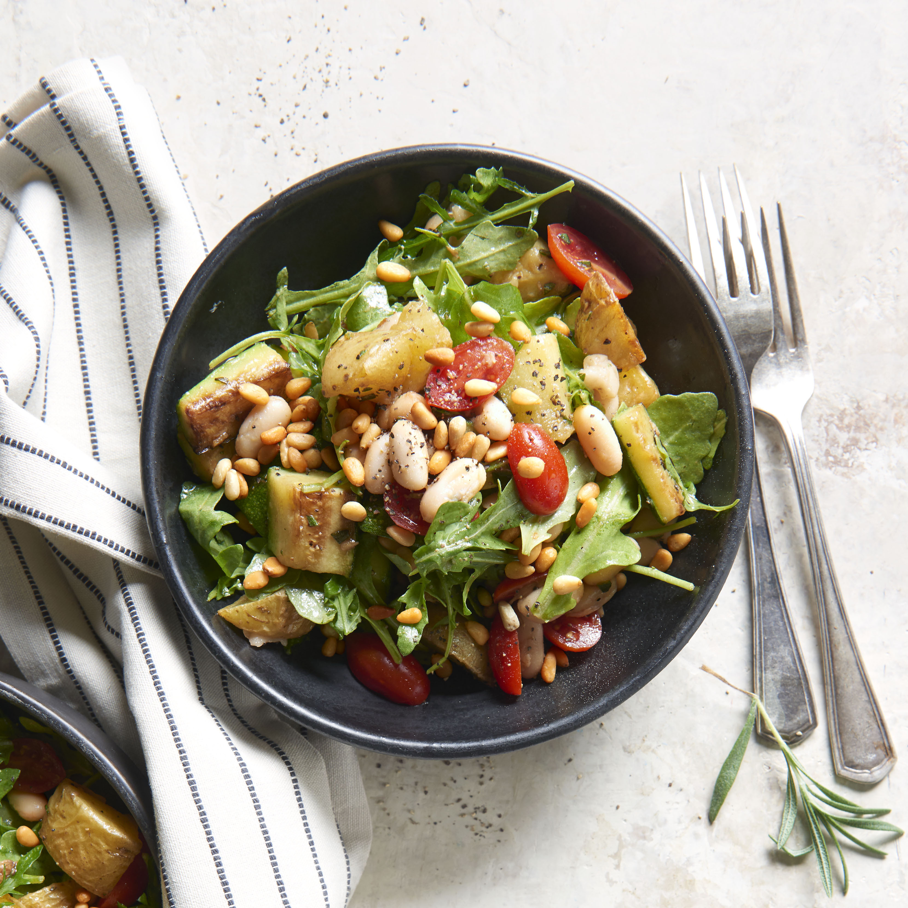

Roasted Vegetable Bowl with White Beans and Garlic-Balsamic Dressing

Ingredients
- ¼ cup pine nuts
- 1 ¼ pounds Yukon Gold potatoes, cut into 1-inch cubes
- 4 cloves garlic, unpeeled
- ¼ cup olive oil, divided
- ¾ teaspoon salt, divided
- ½ teaspoon ground black pepper, divided
- 2 zucchini, quartered and cut into 1-inch slices
- 1 ½ teaspoons chopped fresh rosemary
- 1 tablespoon balsamic vinegar
- 1 (15 ounce) can cannellini beans, drained and rinsed
- 3 cups baby arugula
- 1 cup grape tomatoes, halved
Directions
- Preheat the oven to 400 degrees F (200 degrees C).
- Spread pine nuts on a sheet pan; roast until golden and fragrant, 2 to 3 minutes. Transfer to a plate to cool.
- Put potatoes and garlic on the sheet pan. Drizzle with 2 tablespoons oil and sprinkle with 1/2 teaspoon salt and 1/4 teaspoon pepper. Bake 20 minutes. Add zucchini and rosemary, toss, then continue roasting until vegetables are tender and browned, about 20 minutes. Let cool.
- Squeeze roasted garlic out of its skin into a small bowl, mashing it slightly with a fork. Add remaining 2 tablespoons oil, balsamic vinegar, and remaining 1/4 teaspoon each salt and pepper; whisk to combine.
- Toss roasted potatoes and zucchini in a large bowl with beans, arugula, tomatoes, and dressing. Serve in bowls sprinkled with toasted pine nuts.